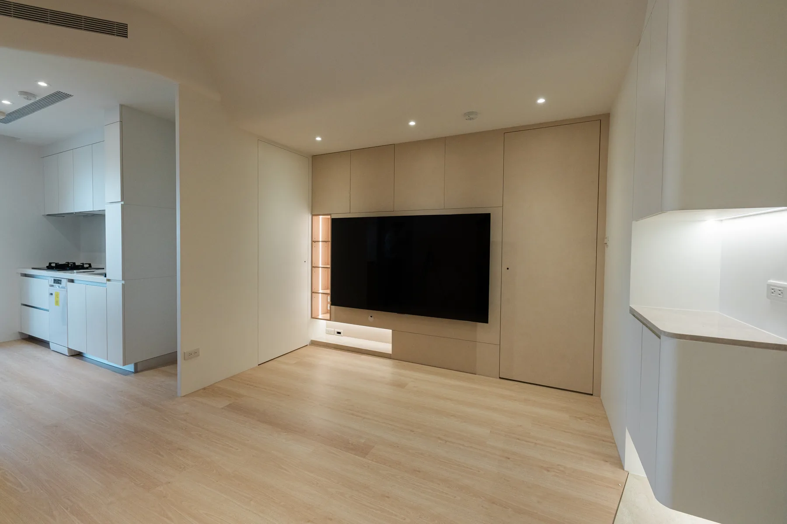
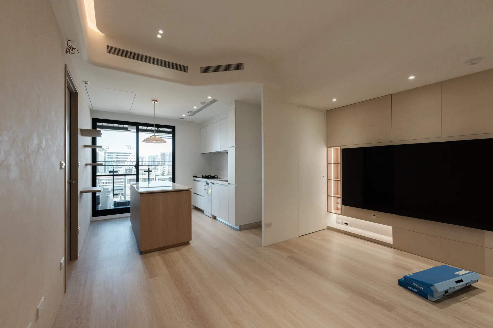
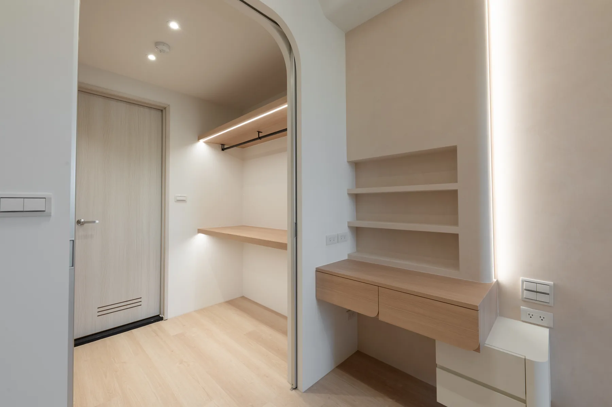

PROJECT 01 RESIDENTIAL
易德聚
淺木餐廚與整合收納，讓備餐、用餐與日常相聚自然相連。
A HOME FOR EVERYDAY
讓日常，在餐廚之間自然發生
以淺木色中島串起備餐與用餐，整合收納沿著生活動線安排，讓開放餐廚保留明亮、俐落的日常感。
- 空間類型
- 住宅餐廚與收納
- 設計重點
- 淺木中島、開放餐廚、整合收納




PROJECT 01 RESIDENTIAL
淺木餐廚與整合收納，讓備餐、用餐與日常相聚自然相連。
A HOME FOR EVERYDAY
以淺木色中島串起備餐與用餐，整合收納沿著生活動線安排，讓開放餐廚保留明亮、俐落的日常感。


